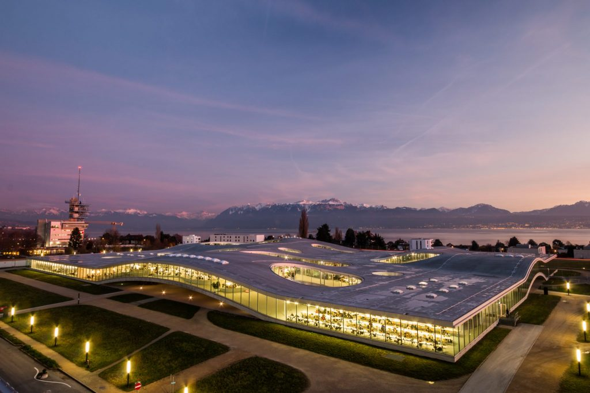

MARIE ETHVIGNOT
MSc student in Robotics Engineering and Space Technologies at EPFL
Passionate about space and robotics, I am looking for a Master thesis that would put into practice my skills and interest in fields such as: mobile robotics, aerial robotics, space mechanisms, computer vison, optimization, algorithm development, trajectory optimization, GNC or space debris/space situational awareness.
Welcome to my website, which describes some of the academic projects I have worked on.
Hopefully this will give you an insight on my background. You can find my contact at the bottom of the page.
The projects are organised by dates, from most recent to oldest.
MY RESUME
Gas source localization with Gaussian Markov Random Field
As part of a semester research project in the Distributed Intelligents Systems and Algorithms Laboratory of EPFL (DISAL), I worked on enhancing gas source localization in hazardous environments using mobile robots equipped with gas sensors.
Traditional methods struggle with complex environments due to the stochastic nature of gas dispersion and the impact of wind and obstacles. To address these challenges, this project explores Gaussian Markov Random Fields (GMRFs) and Gaussian Belief Propagation (GaBP) for gas distribution mapping.
The objective of this project was twofold: (1) to gain a deep understanding of Gaussian Belief Propagation methods applied to gas distribution mapping and (2) to implement, evaluate and compare this method to traditional methods (like the Kernel-based methods) using pre-recorded gas concentration measurements.
Skills used: ROS, Python, Linux
REPORT
DISAL WEBSITE
Peering behind dust storms on Mars with single-photon cameras
As part of a semester research project in the Advanced Quantum Architecture Laboratory of EPFL (AQUA), I worked on developing a robust Visual Odometry (VO) in extreme conditions for robotic space exploration. The ultimate goal of the project for this laboratory was to implement this algorithm on a robot which would use the Single Photon Avalanche Diode cameras developed by the laboratory.
We investigated the performance of state-of-the-art VO algorithms under three types of challenging conditions: varying lighting, dynamic occlusions, and high-speed motion. I was responsible for researching, testing and comparing their performance in the case of dynamically occluded scenes (such as dust storms on Mars), with the aim to choose the most robust one and improve it. To achieve this, I created a relevant dataset, that ressembled a Mars environment under a dust storm, using an existing dataset and synthetizing fog on it.
Skills used: Computer Vision, Visual Odometry, Python, Linux
Self-portrait of NASA's Curiosity rover on June, 15 2018 during a Martian dust storm
REPORT
AQUA LAB WEBSITE
Systems engineering project: design a GNSS satellites constellation around the Moon
The goal of the project was to conceptually design a space mission and its associated spacecraft to establish a GNSS and telecommunications constellation around the Moon. This system would provide essential navigation and communication services to support future lunar exploration, scientific research, and commercial activities.
Our approach involved using systems engineering principles to define the mission's goals, explore various design alternatives, and develop a spacecraft architecture that could meet the demands of the lunar environment. We considered factors like scalability, cost-effectiveness, operational resilience, and regulatory compliance, while addressing technical challenges such as propulsion, communication, and thermal management. The mission concept we developed aims to provide reliable infrastructure for ongoing lunar exploration, laying the groundwork for long-term human and robotic presence on the Moon.
Skills used: Systems Engineering, Mission Design, Teamwork
REPORT
Marine debris detection with Sentinel-2 images
The goal of this project was to develop an image classification model to detect floating marine debris in Sentinel-2 satellite images. Using a Convolutional Neural Network (CNN), the model was trained on a dataset of labeled image patches to distinguish between debris and non-debris regions.
The project addressed challenges like dataset imbalance and spectral sensitivity, applying techniques such as data augmentation and weighted sampling. The results showed that the 12-band model provided the best performance, highlighting the importance of using a broader range of spectral bands for accurate detection.
Skills used : Deep Learning, Python, Image processing, Teamwork
REPORT
Applied data analysis project
Can we predict the end of a movie without watching it?
The goal of this project was to apply data analysis techniques to a real-world dataset in order to address a specific question or research problem. The project is designed to practice critical skills in data wrangling, statistical analysis, and data visualization, while also communicating results effectively.
Our analysis focused on exploring whether a movie's ending (happy, tragic, or neutral) can be predicted based on various factors such as genre, actors, directors, time period, ratings, box office performance, and cultural influences.
Skills used : Data wrangling, Exploratory Data Analysis, Statistical Analysis, Python, Communication, Teamwork
GITHUB
WEBSITE
Model Predictive Control for a rocket prototype
This mini_project involved the development of a Model Predictive Control (MPC) system to control a rocket prototype, focusing on trajectory tracking and stable flight using drone racing propellers instead of a rocket engine. The goal was to model and control the rocket's flight dynamics using a nonlinear system model.
We designed and implemented an MPC controller that managed the rocket's dynamics, including its pitch, roll, and thrust components.
The project was divided into several phases, including linearization of the system, design of sub-system MPC controllers for specific axes (x, y, z, and roll), and the integration of a nonlinear MPC controller to improve tracking performance under real-world conditions. We also addressed challenges such as offset-free tracking to handle mass variations and delays in the control system, ensuring robust performance despite these disturbances.
Skills used : Nonlinear Control, MPC, Simulation and optimization (MATLAB and CASADI), Teamwork
REPORT
Crazyflie mini-drone project
In the scope of a course of Aerial robotics, I worked on a group project which consisted in programming a CrazyFlie mini-drone to accomplish an autonomous navigation mission in physics-based simulation (on the Webots software) first, then in a real-life set-up.
The mission required the implementation of control, navigation and obstacle avoidance to carry out the required tasks such as flying in a specified zone while avoiding collisions with unknown obstacles or successfully taking-off from and landing on specific pads. One key aspect of this project was also to bridge the gap between the simulation and the real-world by adapting our strategy and implementation.
Skills used : Aerial robotics, Control, Navigation, Python, Webots, Teamwork
GITHUB
Quadruped locomotion with Central Pattern Generators and Deep Reinforcement Learning
In this project for the course of Legged Robots, we investigated two different approaches to quadruped locomotion: Central Pattern Generators (CPG’s) with predefined gaits, and reinforcement learning using a Markov Decision Process (MDP). The general goal in using these different methods is to generate a quadruped which is capable of stable locomotion. We additionally investigated the effects of the two aforementioned methods on the velocity of the quadruped and the cost of transport. We used a Pybullet simulation of a standard quadruped with three actuated joints per limb, making a total of 12 joints.
For the reinforcement learning approach we compared two different possible algorithms that could be used (Proximal Policy Optimization and Soft Actor-Critic), with the goal of designing an effective reward function.
Skills used: Legged robotics, Reinforcement Learning, Python, PyBullet, Teamwork
REPORT
GITHUB
Mobile robotics project
The main challenge of the project was to program a mobile robot to find the shortest path to autonomously navigate from a starting point to a goal point while avoiding obstacles in real time. This navigation heavily depended on computer vision techniques to process live camera feedback of the scene, enabling the robot to detect its position, the goal and the obstacles along its path. To achieve this, we implemented optimal pathfinding algorithms and Bayesian methods, such as the Kalman filter, to predict and correct the robot's trajectory. These tools enabled both global path planning and local obstacle avoidance, ensuring the robot could reach its destination smoothly and efficiently, even in dynamic, unpredictable environments.
Skills used : Python, Jupyter Notebooks, Kalmann filtering, Teamwork
GITHUB
E-puck, the pet dog
In this group project for the course of 'Embedded Systems and robotics', we programmed the E-puck robot to act as a pet dog. We found inspiration in the games or our childhood in which we could take care of a virtual dog (by feeding him, washing him, etc...). Our implementation was structured in the following sequence. The robot was moving randomly while avoiding obstacles, and when it was hungry, it would "bark" and stop moving. To stop the barking sound and allow it to move again, the user needed to provide it with food (in a red recipient) by putting it close to its camera. After having eaten, the dog would stop barking and go back to its wandering mode.
The robot’s functionality relied on a combination of stepper motors for mobility, an infrared distance sensor for object detection, and a camera for recognizing colors. The implementation required a sophisticated system of threads and semaphores to coordinate the robot’s tasks efficiently.
Skills used: C, Assembly language, Digital Signal Processing programming, Microcontrollers
REPORT (IN french)
Balanced Isospring - Compliant Mechanisms Design
This project centered on developing an innovative oscillating mechanism for a travel clock, named the "Balanced-Isospring." The mechanism incorporates a two-degree-of-freedom isotropic oscillator designed to withstand both linear and angular accelerations, maintaining accuracy no matter the clock’s orientation or motion. The design emphasizes achieving equilibrium in both forces and moments, enabling the clock to keep precise time even under movement. The report covers the underlying operational principles, structural design of the mechanism, selection of materials, construction methods, and a thorough evaluation of the project's results.
Skills used : Mechanism conception, Structures, CATIA (Computer Aided Design), Teamwork
Source: Example of such a compliant mechanism in the watchmaking industry
REPORT (IN FRENCH)
Digital clock - Logical System Design
This project involved the design and implementation of a digital clock. The clock featured standard
functionalities like time display and an alarm, alongside more advanced
features such as a stopwatch, multiple time zones, and LED animations.
The watch was operated using two push buttons, two dip switches, a
buzzer, a 4x4 keypad, and six 7-segment displays. Users coulds set the
time, select different time zones, and configure the alarm through a
combination of button presses and keypad inputs. The system's
architecture was built around a central finite state machine (FSM) that
managed these functions, using multiplexers and demultiplexers to
control inputs and outputs specific to each module.
Skills used: Logical system design, digital electronics, Teamwork
Planet Donut - C++
The "Planet Donut" project in C++ involved simulating a system of robots
tasked with resource extraction on a planet, employing a series of
specialized algorithms. These include managing connections between
robots, resetting their travel data, and strategically deploying
different types of robots—prospection, drilling, transport, and
communication—each with specific roles like identifying resource
deposits, extracting resources, and maintaining a communication grid.
The strategy emphasized comprehensive planetary coverage to maximize
resource extraction efficiency while ensuring that the robots operate
effectively within set parameters.
Skills used : C++, Object-oriented programming, Teamwork